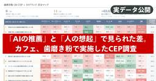
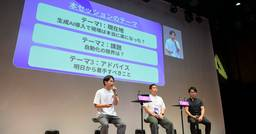

MarkeZine:新着一覧
https://markezine.jp/
翔泳社が運営するマーケター向け専門メディア。MarkeZineはデジタルを中心とした広告・マーケティングに関する情報を多角的な視点で毎日提供します。
フィード
AI時代の「見えない顧客」をどう捉えるか。パナソニック コネクトとTORiXに聞く、企画部門の役割
MarkeZine:新着一覧
生成AIの普及により、顧客の購買プロセスはより複雑化・不可視化している。伝統的なアプローチが通用しづらくなった今、マーケティングと営業はいかに連携すべきか。また、そのために企画部門はどう進化すべきなのか。2026年7月22日、23日に開催した「BtoB Synergy FORUM powered by MarkeZine & SalesZine」では、パナソニック コネクトの関口氏とTORiXの高橋氏が登壇。部門横断の顧客理解と「AI Ready」な組織構築を加速させる企画部門の真価について意見を交わした。
2日前

【実データ公開】「AIの推薦」と「人の想起」で選ばれるブランドは変わる。カフェ・歯磨き粉のCEP調査
MarkeZine:新着一覧
あらゆる生活シーンでAIの活用が浸透するにつれ、「人の想起」のみならず「AIの推薦」が重要になってきています。これからの時代に、ブランドは「人の想起」と「AIの推薦」の獲得にどう向き合うべきでしょうか。この記事では、国内初カテゴリー戦略ファームsusworkが取り組むカテゴリーリサーチ、その実データを元に、AI時代のブランド成長のヒントを紐解いていきます。
2日前
休眠顧客145%活性化！「手仕事の熱量」を力に変えたシップス50周年キャンペーンの戦略に迫る
MarkeZine:新着一覧
シップスの50周年記念キャンペーン「CRAFTMAN,SHIPS」は、600時間かけて製作したハンドメイドの刺繍をクリエイティブに用い、「進化する老舗」としてこれからの姿勢を示しました。結果、休眠顧客活性化率145%アップ、新規獲得率117.2%アップという成果を達成。優れたデザイン戦略と測定可能な成果が紐付いた取り組みとして、世界のアワードでも高く評価されています。どのような戦略のもと、同キャンペーンは実施されたのか、プロジェクトメンバーのみなさんに取材しました。
2日前
「Human-made」は次の「オーガニック」になる？「人が作った」をブランド価値にする海外最新事例 1
1
MarkeZine:新着一覧
生成AIは、マーケティングの制作現場に急速に入り込んでいる。広告コピー、商品画像、動画、SNS投稿。かつて外注したり、撮影したりしていたものを、今や数分で生成できる。ところが、その反動ともいえる動きが海外で起こり始めた。ブランドが「AIを使えること」ではなく、「AIを使っていないこと」を消費者に伝え始めているのだ。さらに、人間が制作した作品であることを第三者が証明する認証制度まで登場した。オーガニックやフェアトレードが「何を買うか」だけでなく「どう作られたか」を価値に変えたように、AI時代には「Human-made」が新しいブランドシグナルになるのだろうか。
2日前
【CPA15.6%削減・新規リーチ40%増】Meta×ナハトが実証したThreads広告の勝ち筋
MarkeZine:新着一覧
急速なユーザー拡大を続ける「Threads」。安価なCPMや新規層へのリーチが注目される一方、「どう配信すれば良いかわからない」「ダイレクト獲得の勝ちパターンが見えない」と頭を悩ませるマーケター・EC担当者は少なくありません。この課題に対し、Metaとナハトは共同検証プロジェクトを発足。「静止画×独り言風テキスト」へのフォーマット最適化やプレースメント調整により、Threads面への配信比率を高め、結果としてキャンペーン全体のCPA 15.6%削減や単一投稿が12時間で数十件のCV獲得につながるといった成果を上げました。本記事では、Meta広告全体のパフォーマンスを底上げする、Threads広告の最新勝ちパターンと具体的な設定・運用戦略を明かします。
3日前

バンダイナムコネットワークサービスと不動産テックのカナリーがAI活用×内製化のリアルを語る
MarkeZine:新着一覧
モバイルアプリの計測・分析ツールを提供するAdjustは、アプリマーケティング業界のリーダーを集めたカンファレンス「Adjust Ignite Tokyo 2026」を開催した。「生成AI時代のマーケティング自動化・内製化のリアル」と題されたセッションには、バンダイナムコネットワークサービスとカナリーの2社が登壇。ハウスエージェンシーとしてグループ各社の広告案件でのAIを活用する前者と、インハウスマーケター1名でAIを用いた広告運用の自動化・高度化を進める後者の事例を通じて、実務のリアルと具体的な打ち手が共有された。本稿ではその内容をレポートする。
3日前
【横浜F・マリノス×ファナティクス】街中出店も視野に。熱狂を生むスポーツMD×ECの改革
MarkeZine:新着一覧
多くのEC・店舗事業者が抱える「顧客体験（CX）向上」と「売上拡大」の両立という課題。Jリーグクラブの横浜F・マリノスも、試合日の混雑による機会ロスや、膨大なSKU管理・出荷リードタイムの短縮など、CX向上と売り上げ拡大に関わる課題を抱えていました。そして、同クラブはマーチャンダイジング（MD）とECを改革すべく、スポーツ領域のMD・EC支援に強みを持つファナティクス・ジャパンとパートナーシップを締結。「15時までの注文で即日発送」やスタジアム店舗の動線刷新、路面店構想などOMO戦略を本格化しました。本記事では、両社による物流・店舗改革とサプライチェーンの裏側をキーパーソンに聞きました。
3日前
MAU30万のアプリ起点に「習慣」を作る。北海道日本ハムファイターズに学ぶデータ活用
MarkeZine:新着一覧
単なる野球場を超え、巨大なエンターテインメント空間として進化を続ける「北海道ボールパークFビレッジ」と「エスコンフィールドHOKKAIDO」。同施設を運営するファイターズ スポーツ＆エンターテイメントは、共通IDや公式アプリを軸としたデータ統合を行い、従来のスポーツビジネスの枠を超えたマーケティングを展開している。新規の観光・ライト層獲得から、複数回来場への習慣化、さらにカスタマーエンゲージメントプラットフォーム「Braze」を用いたOne to Oneコミュニケーションまで。「ファンの習慣化」を生む、データドリブンマーケティングの全貌に迫ります。
3日前

Metaアプリ広告の新常識。ROASが約12.7倍改善した「バリュー最適化（VO）」活用のポイント
MarkeZine:新着一覧
成熟期を迎えたアプリマーケティング市場において、単なるインストール獲得だけでは事業成長を描けず、ユーザーのLTV最大化が広告主の最大の課題となっています。この壁を突破する強力な打ち手が、高LTVユーザーを狙うMeta広告の入札戦略「バリュー最適化（VO）」です。本記事では、VOの導入により従来手法からROASを約12.7倍に改善した検証結果を公開。さらに、MetaとCyberZが教えるVO活用の成果を出すポイントまで、事業収益に直結する運用ノウハウをお届けします。
9日前
7万人規模に急成長のイベント「BitSummit」に学ぶ、マーケターが知るべきインディーゲームの魅力
MarkeZine:新着一覧
2013年にわずか200人の有志から始まったインディーゲームの祭典「BitSummit」は、2025年開催時点で7万人規模の一大イベントへと成長を遂げた。巨大予算で制作する誰もが知るAAAゲームとは異なり、クリエイターとファンが直接結びつく熱狂的なコミュニティは、マーケターも知っておくべき価値があるという。本記事では、主催である日本インディペンデント・ゲーム協会（JIGA）の小清水氏と、長きにわたり企画運営を支援するオリコムの針崎氏に取材。異業種の企業が続々と同イベントに協賛する背景や、ブランドがインディーゲームを通じてファンと深い関係性を築くためのヒントを探る。
9日前